Continuum Engine and Validation Protocol
CURRENT-BUILD AUTHORITY: All active registered claims are adjudicated and closed at their declared scope. Terminal classes described in this document are execution semantics for posed inputs and do not denote unfinished canonical project work.
Canonical closure interpretation — upstream resolution required
A registered claim is certified closed when the record states what SEAM resolves upstream that produces the observation or makes the conventional description downstream. The required order is:
native complete structure → native relation/field/selector consequence → frozen result → conventional representation/comparator
For each registered claim the authoritative row-level linkage is SEAM_210_CLAIM_CERTIFICATION_REGISTER.md and the claim-specific record under Evidence/Claim_Certification/. Those records name the upstream mechanism, sealed execution/result, quantitative standing where applicable, scientific comparator, and exact boundary.
No-reduction rule (see
00_README.md). Structure in this archive is retained faceted and is never collapsed to a scalar. A faceted or symbolic form is a complete description of a resolved structure, not a deferred value. It does not license reading an unevaluated row as resolved: see the three-state status vocabulary (RESOLVED/EXCLUDED/NOT_EVALUABLE) in00_README.md.
Archive: Continuum Paradigm
Lineage: ESIH → ESAM → SEAM → Continuum → Manifold
Role: Executable architecture, Q-ARCV/M-ARCV/A-ARCV discipline, cold-reader engineering protocol, runner boundaries, transcript requirements, and scoring rules.
Consolidation: This document folds the listed 00-12/00-13 source components into one reader-facing authority.
Canonical architecture and execution scope
The Continuum Paradigm uses one integrated architecture with distinct responsibilities:
ESAM is the mathematical-formalization lineage through which the ESIH structural principles are expressed in the SEAM mathematics.
The narrative definition states the physical meaning of a principle. The formalism supplies the complete mathematical state required to calculate that principle in a particular case:
The existence standard distinguishes possible and realized existence:
The Continuum is the physical domain. The Continuum Manifold is the retained and normalized record of observed or resolved portions of that domain:
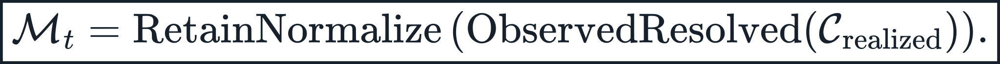
Current quantitative execution scope
Architectural scope and executed numerical scope are recorded separately.
The atomic structural domain carries the fully explicit numerical admissibility implementation presently retained in the archive. Molecular, aggregate, electromagnetic, propagation, material, biological, and macroscopic domains inherit the same structural admissibility and interaction architecture through their declared native constructors.
Chemistry and biology presently carry architecture-level structural coverage. Domain-wide quantitative completion enters the evidence standing through executed native calculations.
Bond interaction architecture is retained where documented. Numerical bond lengths and dissociation energies enter the evidence standing when their native calculation, seal, and comparator record are present.
Macroscopic interaction and force architecture are retained where documented. Absolute SI force values and a numerical derivation of enter the evidence standing through their own completed native execution and evidence records.
Continued calculation expands quantitative coverage while preserving the same first-principles architecture.
Source components folded here
02_SEAM_CANONICAL_ENGINEERING_SPEC.mdCOLD_READER_ENGINEERING_PROTOCOL_v1_1.md
Part 1: Consolidated Source — 02_SEAM_CANONICAL_ENGINEERING_SPEC.md
SEAM Canonical Engineering Specification
System: Continuum Paradigm; SEAM — Systemic Empirical Atomic Model is the causal substrate layer
Standing: Complete
Document role: Concise engineering definition of the completed canonical system.
Mathematical authority: 02_CONTINUUM_TECHNICAL_FOUNDATIONS.md
1. System definition
SEAM is the executable mathematical layer of a structure-first physical framework.
The canonical dependency stack is:
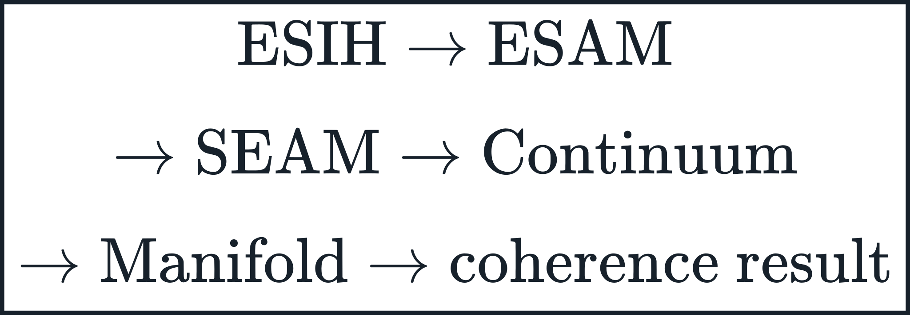
The system resolves causal physical structure first and expresses conventional observables afterward.
Layer responsibilities
| Layer | Engineering responsibility | Output |
|---|---|---|
| ESIH | First-principle structural constraints | Admissible primitive/constraint set |
| ESAM | Mathematical realization | Structural state, configuration, entropy, coupling, closure mathematics |
| SEAM | Deterministic execution | Primitive result, closure trace, projection, validation state |
| Continuum | Persistent validated reference | Retained structural/observational state |
| Manifold | Active normalized comparison | Query-specific comparison structure |
| Resolver | Representation of resolved state | Human/machine-readable answer |
2. Canonical physical ordering
The system executes the following causal order:
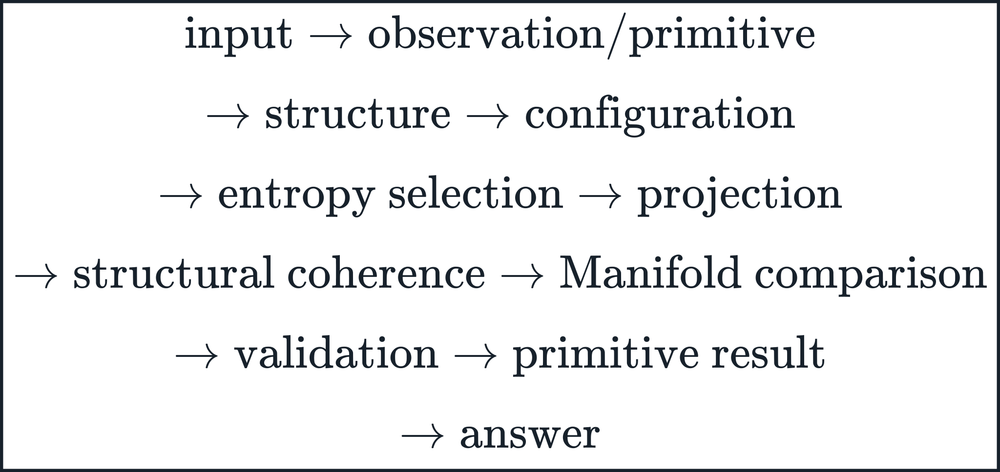
The complete closure operator is:
where:
- = representation constructor;
- = structural/configuration closure;
- = transfer/trajectory stage;
- = internal structural/continuity coherence;
- = Manifold comparison;
- = validation closure.
3. Primitive structural representation
3.1 Atomic baseline
The canonical atomic start is the electron-count baseline:
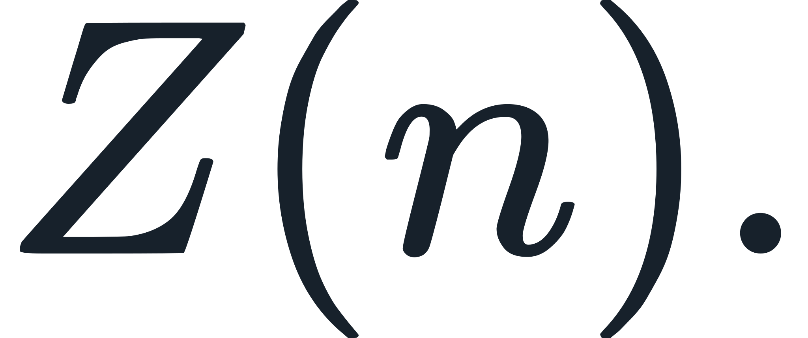
The seven-shell capacity vector is:
3.1.1 Elemental shell-admissibility count
The seven-shell capacity vector gives the native positive-Z elemental shell-admissibility ceiling directly:
Thus the shell-admissible positive-Z elemental baseline domain is:
The shell-closure sequence is:
The archive's 118-element results are the current empirical comparison and qualification range. They do not define the mathematical ceiling of the seven-shell architecture. The null state may be represented as an empty shell state for integer accounting, but it is not an elemental baseline.
For entity and shell :
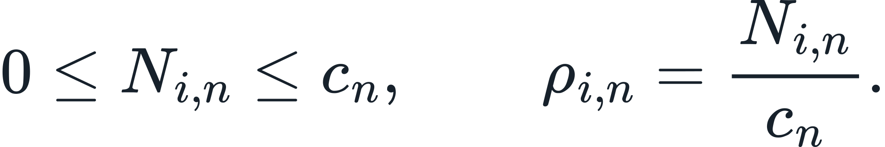
The entity shell state is:
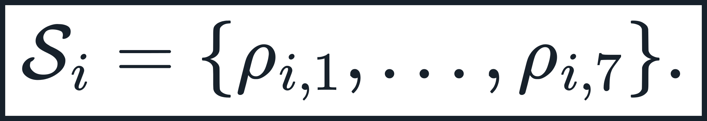
3.2 Relational state
The complete relational state is:
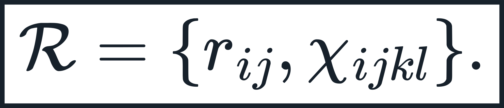
with pair separation
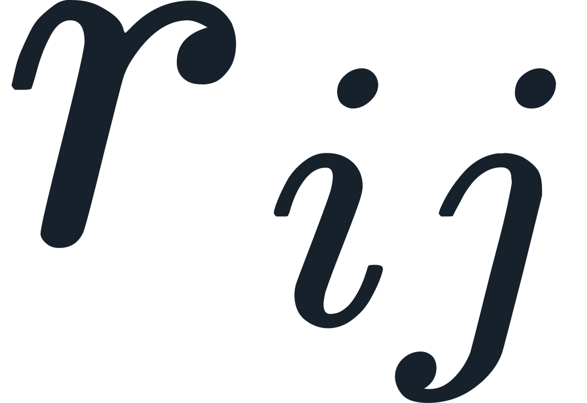
and reflection/chirality parity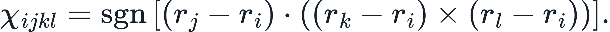
3.3 Complete configuration
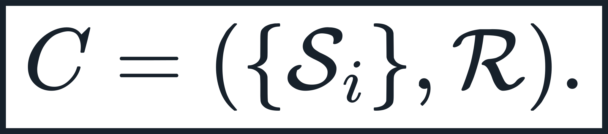
The admissible configuration set contains configurations satisfying the declared count, capacity, topology, relation, boundary, and contract constraints.
4. Entropy-directed configuration resolution
The governing selection rule is:
The canonical functional is:
4.1 Configuration entropy
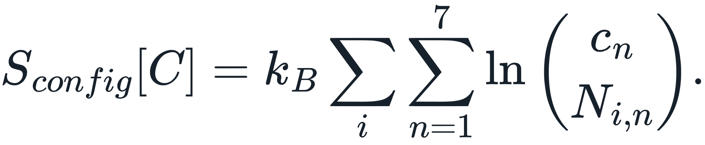
4.2 Native shell support
For dimensionless native coordinate and entity center
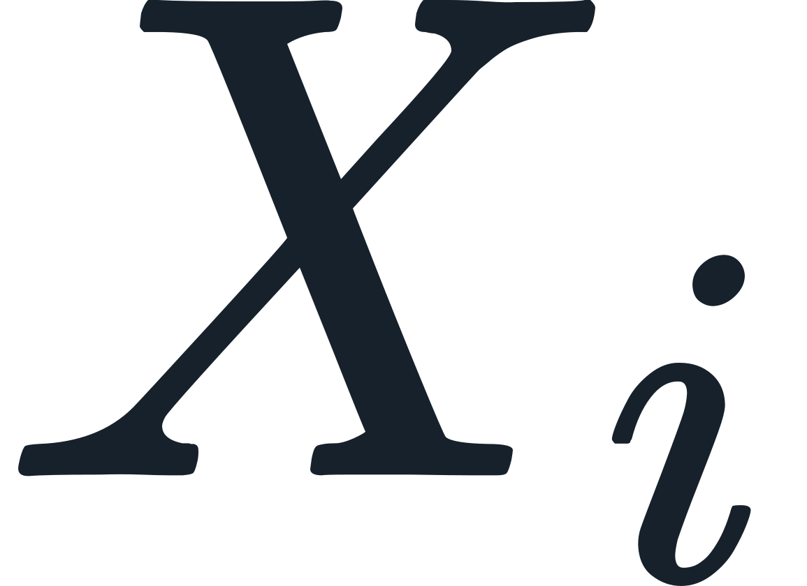
: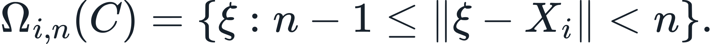
Shell volume:
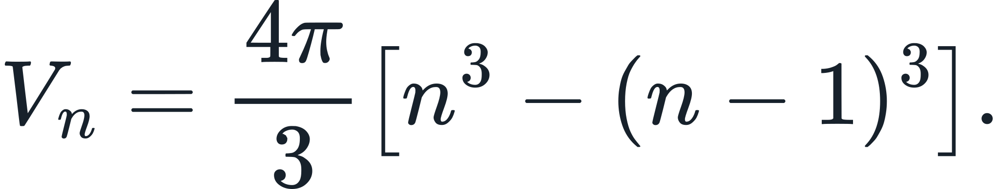
Normalized basis:
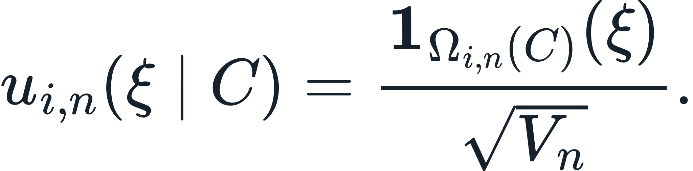
4.3 Structural field
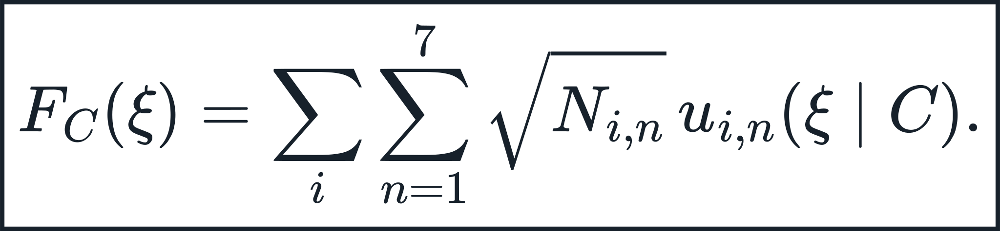
Normalized density:
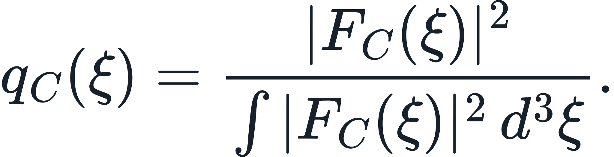
Field entropy:
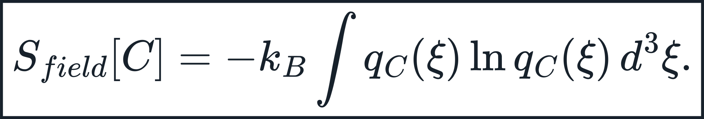
4.4 Shell-overlap operator
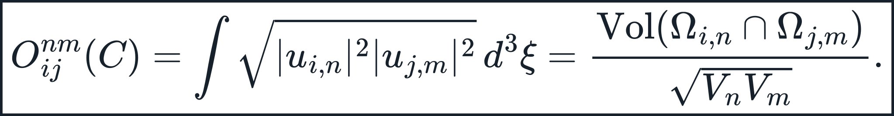
4.5 Coupling entropy
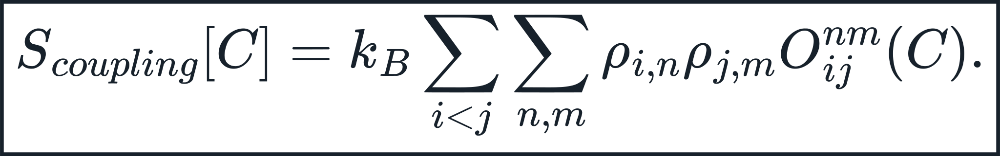
4.6 Single-atom shell-field evaluation identity
For a single atom, the complete field construction remains operative: and the normalized density
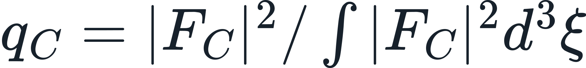
are not discarded. Canonical annular supports are disjoint for intra-atomic spatial cross-shell overlap, so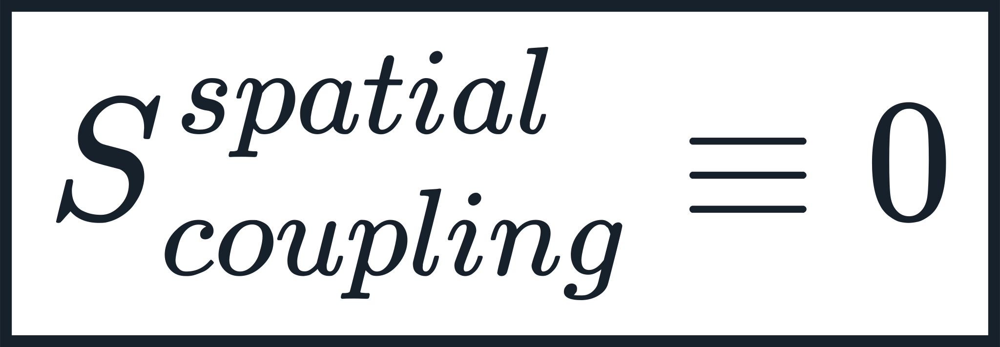
for that spatial cross-overlap term, while shared field normalization supplies the inter-shell field contribution. The expression

is an evaluation identity for the declared single-atom shell-field construction, not a replacement of the complete field definition. Its numerical agreement with the direct field integral is reported over the current empirical comparison record.
4.7 Signed shell-field operator
Define the causal/backward second-difference shell-response operator where two prior count states exist:
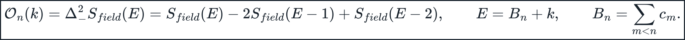
This operator is the canonical signed shell-field response on the complete architectural domain where two prior states exist: , 126 evaluable states. The current empirical-comparison subset contains 116 evaluable states. Execution establishes positive response at evaluable shell openings and negative response under continued fill:
The qualification result is 0 violations over 126/126 architectural evaluable states, including 0 violations over the 116/116 empirical-comparison subset. The closed-form operator reproduces the direct field backward second difference to machine zero across the evaluable within-shell states.
The operator depends on total electron count , shell volume
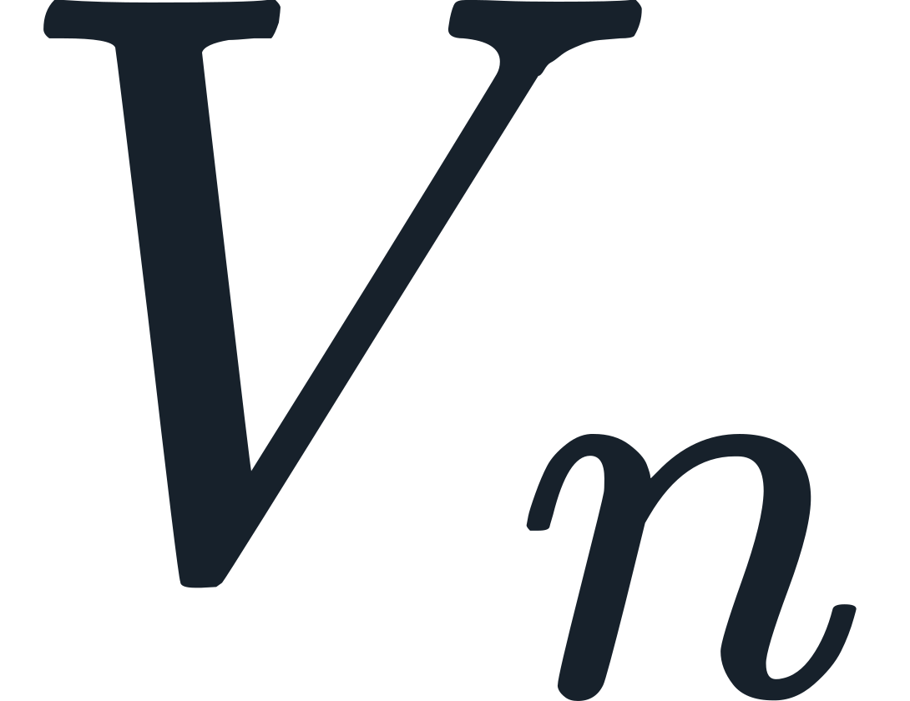
, and the causal/backward count stencil; these structural coordinates carry the canonical field response.4.8 Canonical operator integration path
The shell-field operator is consumed as structural state within the full entropy and closure architecture:
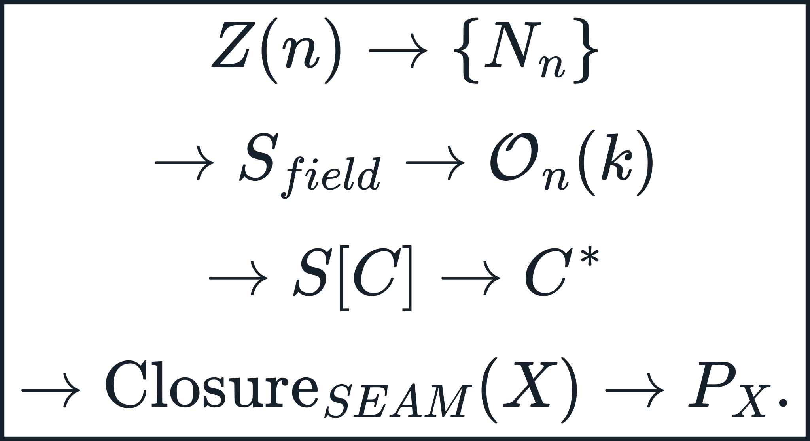
The invariant engineering object at the shell-response layer is
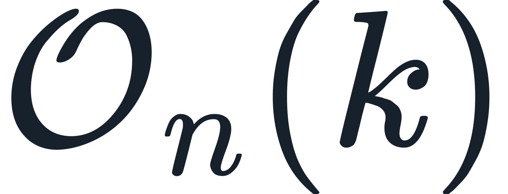
, while configuration selection remains governed by the complete three-term functional . The shell-response operator therefore contributes to, but does not replace, configuration entropy, inter-entity coupling, structural closure, Manifold comparison, or validation closure.The composition boundary is:
For time-bearing projections, consumes the canonical Cs-resolved interval
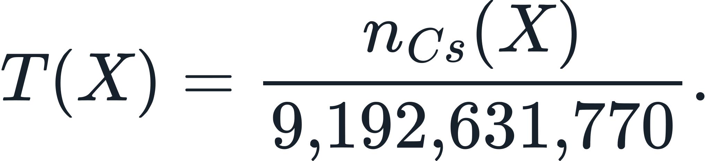
For neutron-conditioned atomic evidence, the resolved native state retains
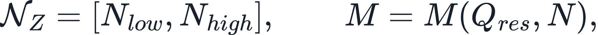
so empirical adjudication preserves the complete native coordinate set through the final evidence join.
4.9 Entropy-resolution state evolution
The canonical configuration selector and the continuously evolving entropy-resolution state are related but distinct objects.
selects the admissible configuration under the canonical entropy law. The realized state then participates in the continuous entropy-resolution loop
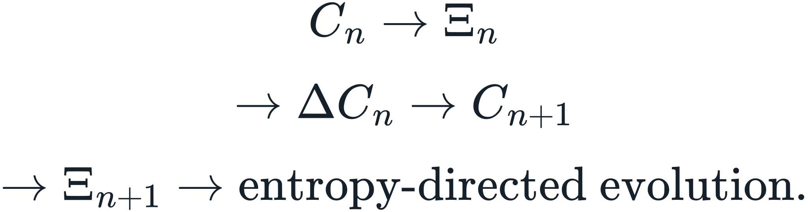
is the current entropy-resolution state generated from the accepted structural/entropy content. It is not an independent admission gate and does not replace .
This distinction is load-bearing:
The operational closure composition validates, compares, and resolves the represented state downstream of native evolution.
5. Single interaction law
The governing structural interaction is common across construction scale:
The identity denotes a common governing law. Each realized configuration supplies its own state, geometry, magnitude, and projection.
5A. Variational-field interaction and macroscopic projection
For a pair configuration evaluated at native separation , the canonical interaction path resolves the admissible field state from the same entropy functional that selects the physical configuration.
5A.1 Field-state resolution
For each occupied shell,
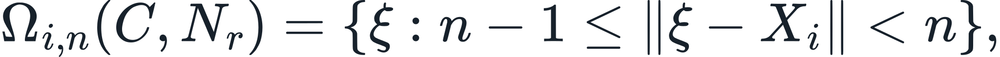
and the admissible internal-field class is
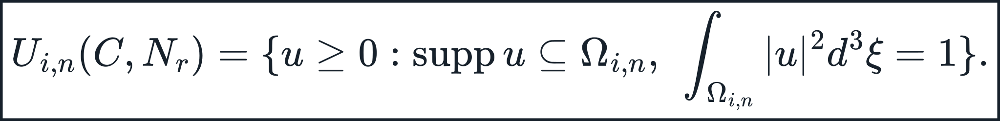
The uniform indicator
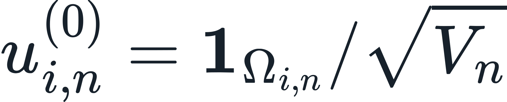
is the isolated-state/fixed-branch baseline; it is not imposed as the universal interacting profile.
At fixed , the selected field is
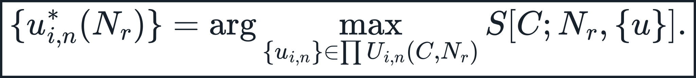
Shell support, occupancy, topology, entropy composition, coupling law, and the comparator firewall remain frozen. The field may redistribute only within its already-declared shell support. No target-derived profile or post-run tuning is admissible.
The resolved field objects are
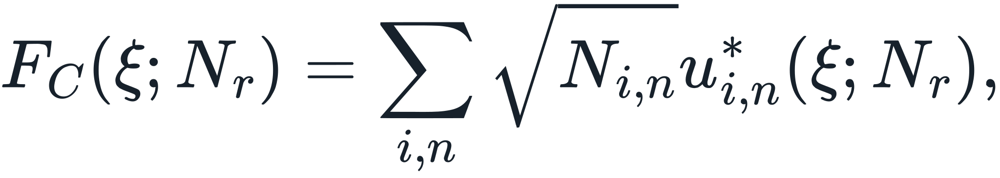
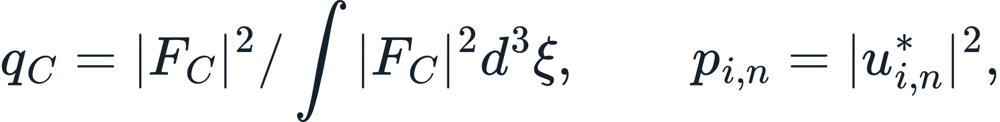
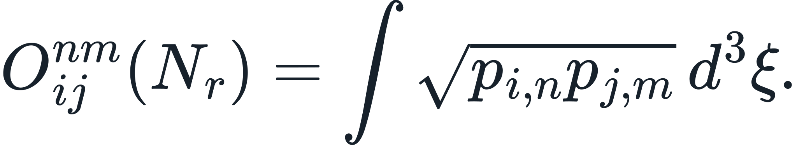
The separation-dependent selected entropy is
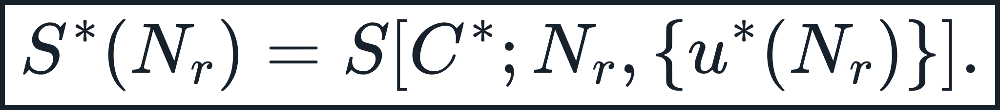
5A.2 Pair-energy consequence and force
The native radial response is
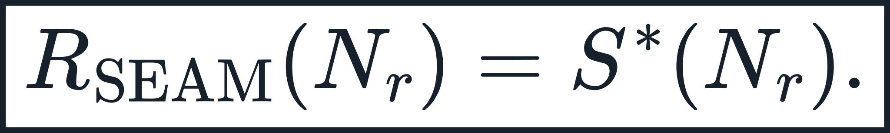
When a run contract selects a finite separation,
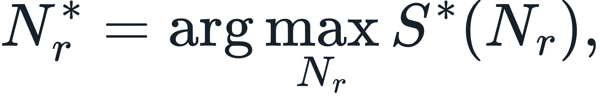
with the declared interior-extremum conditions applied to the complete selected state.
The resolved state is carried into the selected-state energy representation:
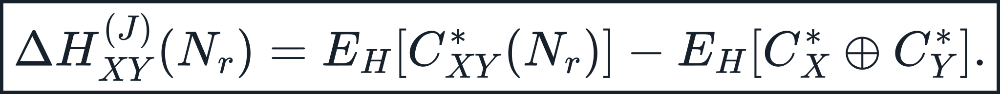
The Hamiltonian/Joule bridge is
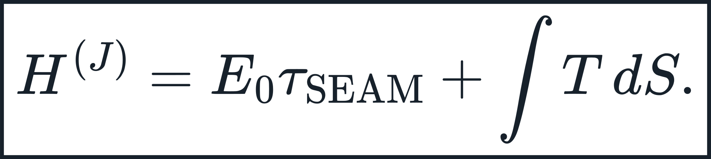
The pair force follows from the resolved energy curve:
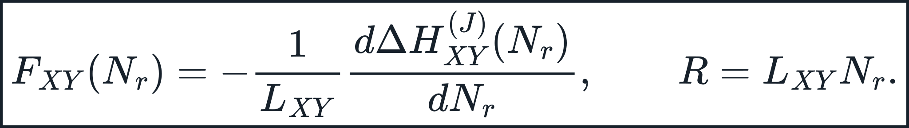
The canonical dependency is therefore
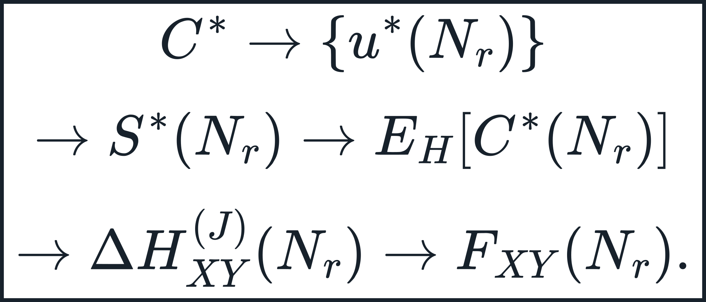
A native electric/magnetic/mixed-channel decomposition and an eta(N_r)/N_r attraction kernel are not inputs to the v18.6 variational molecular selector. The long-range attraction/long-range attraction branch has its own separately declared constructor using eta(N_R)/N_R; executors must not erase that branch or import the v18.6 TAU_PAIR_MAPPING_UNBOUND terminal into it.
5A.3 Scale continuation
The pair result retains the same governing entropy law used for atomic and molecular resolution. Finite-body and macroscopic projections aggregate resolved pair and field structure while preserving the native dependency chain. The resulting macroscopic attraction is therefore an observable projection of the entropy-selected SEAM field state.
This section is part of the canonical interaction law and preserves one foundational interaction class across scale.
6. Structural trajectory
A state trajectory is represented as:
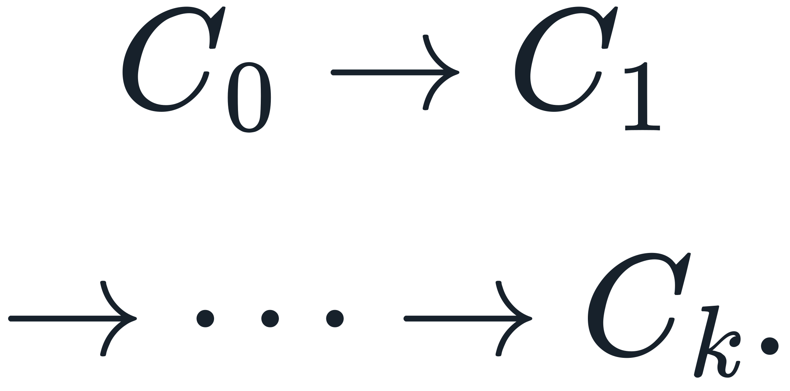
Each transition records:
- predecessor state;
- applied entity/change/distribution/modification;
- resulting state;
- declared operator;
- preserved invariants;
- structural differential;
- closure state;
- time binding when physical evolution is represented.
The entropy-directed evolution loop is:
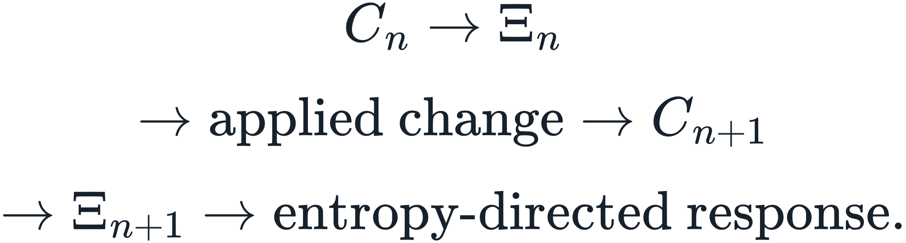
7. Metrology
7.1 Time
Physical time is count-resolved from the Cs-133 hyperfine transition:
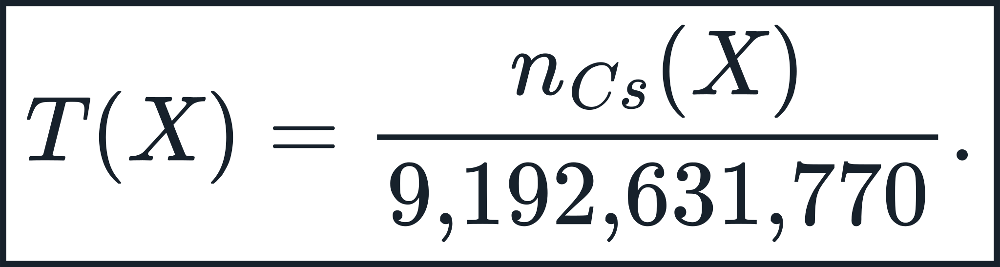
Frequency follows from the resolved interval:
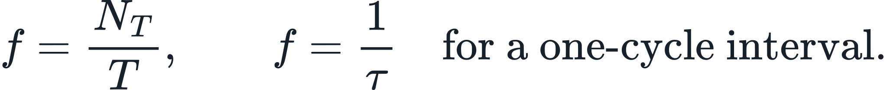
7.2 Native distance
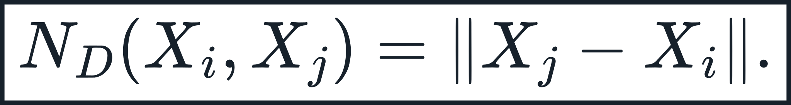
7.3 Baseline-length projection
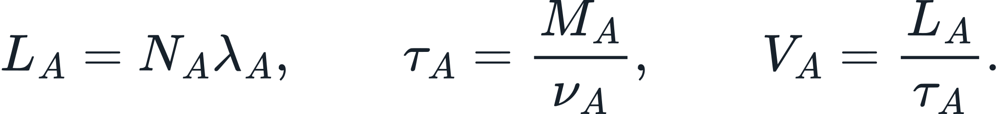
Dimensional reporting:
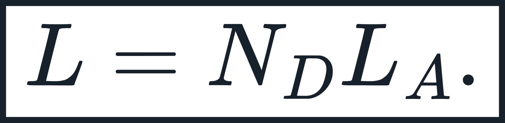
Native resolution precedes conventional-unit representation.
7.4 Derived state relations
Atomic construction begins from the electron-count baseline and shell distribution. Charge and nuclear stability coordinates are downstream state relations rather than alternative atomic generators.
For charge accounting:
Native spatial separation is already resolved at the structural layer:
Dimensional reporting applies only after native distance closure through the declared baseline-length projection.
8. Query and ARCV representation
The engine receives one question per run.
The query representation is Q-ARC. Candidate/reference representations are A-ARC objects. ARCV is the finite structural projection representation that carries the components required by the active contract.
An ARCV may carry:
- magnitude;
- ordered components;
- normalized vector structure;
- relations;
- regime representation;
- admissible deviation bounds;
- intent;
- requested projection.
Projection cardinality is an implementation representation of structural facets. The complete physical object remains the resolved configuration.
9. Full-function evaluation and arbitration
The engine evaluates all applicable functions under the active contract.
Each function reaches a declared terminal form:
- admissible result;
- local refusal;
- execution terminal.
Physical configuration selection occurs through . Query/reference arbitration then selects the strongest admissible structural lock under the active ARCV comparison contract.
For structured discrepancy:
A declared normalization operator produces query discrepancy:
Operational closure is:
A valid reference instantiation is:
with deterministically extracted from the active Q-ARC admissibility bounds.
10. Continuum retention
The Continuum is persistent validated reference structure.
A retained record carries enough structural and provenance information to reproduce supported projections.
A retention transaction accounts for source identity, parse state, observation, structural mapping, validation, disposition, and indexes.
Contribution dispositions are explicitly recorded so every input remains traceable.
11. Manifold construction and comparison
The Manifold is derived from retained Continuum structure:
For an active query, the engine compares the resolved query structure with the active Manifold structure.
A normalized-alignment instantiation is:
The active contract may define another structured comparison operator while preserving the same causal ordering.
The resolved Manifold location is the observation-bearing structure with maximum valid closure under the active comparison contract.
12. Resolver boundary
The primitive result is the answer-bearing state.
The resolver performs representation, explanation, formatting, or translation. The resolved structural state remains unchanged through this operation.
13. Evidence and empirical adjudication
The native derivation and empirical adjudication are distinct layers joined in fixed order:
13.1 Canonical set-valued neutron state
The native neutron output is
The corresponding measured mass object is
The empirical relation is therefore
The full neutron coordinate is retained through the join. The adjudication operates on the native set and the measured nuclide set as structured objects.
13.2 Measurement admissibility
Measurement admissibility is nuclide-level and is taken from the authoritative evaluation's measurement-status field. Each exact nuclide mass carries its own status and disposition. Element-level averages are a separate observational quantity and do not replace nuclide-level mass in this contract.
13.3 Compliance-before-science
The immutable compliance fixture is executed before scientific adjudication. The canonical fixture result is:
A scientific adjudication is admitted only after this fixture reproduces exactly.
13.4 Identity-pinned contracts and artifacts
| Artifact | Role | SHA-256 |
|---|---|---|
| SEAM-EPN-EAC-001 | admissibility + compliance fixture | 16e6f644c21a2dfbc8c4a936de6e2c61b0493847c21c5a183611ee5152491295 |
| SEAM-EPN-EAC-002 | set-to-set nuclide matching | 3d1c87d597acb49d3e56cbeb1b5bfad943a11e5055823511a7de915779f9bb80 |
| Frozen EPN native output v4.3.5 | native set-valued state | 76bf733451381ba634030f101e16a7cf6a4643cb5a091b330f9d5f703d45a092 |
| NUBASE2020 ground-state reference | nuclide-level mass evidence | e7388be4eb00a1d52e500f7ae707eb18dccd7dfa0d423e53f09012d05e5789e1 |
The empirical reference lineage is pinned by contract. The executed mass adjudication uses the NUBASE2020 companion evaluation at nuclide level under the documented measurement-status convention.
13.5 Adjudicated results of record
| Adjudication | Executed result |
|---|---|
| Neutron containment | 118/118 |
| ADMITTED_MEASURED mass rows | 110/118 |
| MATCHED_EXTRAPOLATED mass rows | 8/118 |
| UNMATCHED rows | 0/118 |
The neutron result establishes complete observed-state containment across the 118-element empirical comparison set. The mass join dispositions every native row while retaining neutron conditioning and nuclide-level measurement identity.
14. Execution contract
Every production run carries an immutable contract with:
- contract ID;
- objective;
- canonical specification identity;
- exact inputs;
- exact equations/operators;
- permitted perturbation;
- coordinate/unit contract;
- coefficient values or extraction rules;
- domain/search bounds;
- numerical/analytic method;
- tolerances;
- terminal states;
- required artifacts;
- comparator location;
- comparator access event;
- disposition rule.
The contract supplies complete execution authority for the named run.
14.1 Canonical v18.6 variational numerical contract
Where a production result consumes u*(N_r) or , the numerical method is not selectable by the runner. The active implementation is Evidence/Runtime/variational_field_evaluator.py, runtime identity VF-REGION-LBFGSB-R4, with Python 3.13.5, NumPy 2.3.5, SciPy 1.17.0, float64 arithmetic, exact shell-lens region geometry, five deterministic starts [0.00,0.35,0.70,1.05,1.40], L-BFGS-B ftol=1e-15, gtol=1e-9, maxiter=10000, maxls=100, acceptance gradient norm , and best-two objective difference .
Terminal states are exactly:
RESOLVED
INDETERMINATE_OPTIMIZER_NOT_CONVERGED
INVALID_RUN: CONTRACT_VIOLATION
A different grid, basis, optimizer, restart scheme, tolerance, arithmetic precision, or convergence rule is a different contract and cannot be reported under the R4 runtime identity.
For Hamiltonian projections, a time-dependent total pair-energy/force branch uses the declared selected-state mapping together with an explicit Cs-133 event interval. Static pair structure does not invent elapsed time. This is a closed input-contract rule.
15. Terminal execution
A terminal predicate completes the active run through the canonical sequence:
Workflow continuation occurs through a predeclared successor edge or the canonical dependency-exhaustion path. Every successor receives a new contract identity, UID, transcript, and seal.
This preserves the meaning of every completed run while allowing the root objective to continue through declared dependencies.
16. Production artifact set
A conforming production execution records:
- exact question/input;
- UID;
- implementation identity;
- orchestration identity;
- active Manifold/reference identity and hash;
- metrology identity when required;
- candidate/intermediate structural states;
- entropy/closure values;
- arbitration trace;
- terminal native result;
- comparator-access event;
- empirical comparison;
- disposition;
- resolver output;
- transcript;
- manifest and hashes.
The transcript is part of the scientific result.
17. Universality qualification
The canonical operator discipline has been exercised under arbitrary substitution across four core operator classes:
| Operator class | Substitutions | Admissible/closure partition |
|---|---|---|
| Structural operator | 20,000 | Exact |
| Entropy selection | 6,000 | Exact |
| Neutron closure | 6,000 | Exact |
| Coupling operator | 1,200 | Exact |
| Aggregate | 33,200 | Exact |
The tested operators emitted zero silent closures, zero admissible refusals, and zero inadmissible closures.
This qualifies the operators as contract-governed structural operations rather than example-specific answer rules.
18. Implementation conformance
A software implementation conforms to SEAM when it performs the canonical sequence and preserves the declared mathematical and evidence boundaries.
Conformance requires:
- deterministic structural construction;
- execution of the applicable canonical operators;
- complete function evaluation under the active contract;
- deterministic arbitration;
- Continuum/Manifold role separation;
- physical-time metrology binding where required;
- terminal finality;
- comparator isolation;
- reproducible transcript and artifact identity;
- downstream-only answer translation.
Software is an implementation of the canonical system. The canonical mathematics defines the system.
19. Scientific relationship
SEAM occupies the causal layer beneath conventional scientific descriptions:
Conventional science remains the observational and projective language used to quantify the physical consequences of SEAM-resolved structure.
19A. Cross-domain projection binding
The engineering architecture carries one native evolution process into multiple observational surfaces:
The projection family covers, as required by the active contract, thermal, pressure, acoustic, vibrational, electrical/magnetic, optical/radiative, fluid/transport, reaction-rate, environmental-boundary, biological, and other observable domains. Each projection declares its input state, observable, metrology, regime, uncertainty, and evidence boundary.
The projection library is therefore an extensible reporting/comparison surface over the completed native causal architecture.
20. Engineering disposition
System standing: COMPLETE
Foundational stack: DEFINED
Canonical mathematics: DEFINED
Execution architecture: DEFINED
Continuum retention: DEFINED
Manifold comparison: DEFINED
Metrology binding: DEFINED
Validation discipline: DEFINED
Terminal workflow: DEFINED
Resolver boundary: DEFINED
Universality qualification of core operators: EXECUTED
The completed system is ready for continued application, implementation, empirical adjudication, Manifold expansion, and domain-specific execution under the canonical contract.
Current canonical source basis
The live reader-facing authority is the current package itself:
00_README.md01_CONTINUUM_CANONICAL_CHARTER.md02_CONTINUUM_TECHNICAL_FOUNDATIONS.md03_CONTINUUM_ENGINE_AND_VALIDATION_PROTOCOL.md04_CONTINUUM_CLOSURE_AND_STANDING_MATRIX.md05_CONTINUUM_EVIDENCE_AND_VERIFICATION_RECORD.md06_CONTINUUM_CRITICAL_READER_GUIDE.md07_CONTINUUM_PHASE_BY_PHASE_EXECUTION_GUIDE.md
Only the active package paths and current certificates listed by this distribution have current authority.
21. Cross-document authority
This specification is the concise engineering extraction of the canonical system. It does not replace the full Technical Foundations. The Fundamental Law Charter supplies the declarative law layer; Technical Foundations supplies normative mathematics and execution semantics; the Completion Contract supplies project standing; the Closure and Coverage Matrix supplies current domain mapping; the Cold-Read Primer supplies review discipline; and the Narrative supplies explanatory context.
Part 2: Extended Engineering Rules
Cold-Reader Engineering Protocol — GroundUp Repository
Purpose: prevent a reviewer — human or AI — from repeating a known, recurring failure sequence when evaluating ESIH, ESAM, and SEAM.
Standing of this document: engineering guidance only. It carries no theory claims and issues no disposition on the framework. Every factual statement is either a direct quotation of a repository artifact or a result the author reproduced by executing repository code in a clean sandbox. Where this document reports a reproduction, the reader is expected to re-run it rather than accept it.
What this document deliberately does not do: it does not tell you whether ESIH or ESAM is closed. That determination is yours to make after completing the read. A protocol that hands over its conclusion produces uncritical acceptance, which is a failure of the same family as premature rejection — the direction flips, the error does not. §7 records what was reproduced; it stops there on purpose.
1. Why this document exists
Reviewers arrive, sample a few files, form a verdict, and report defects that the repository has already anticipated, disposed of, or forbidden by written rule. The failure is not carelessness about any single file. It is structural: forming conclusions before completing the read, and reaching for legacy anchors where the framework derives its own.
The traps in §5 are not hypothetical. Each was hit by a real reviewer, and in each case the answer was already written in a file that had not yet been read.
(Session-specific narrative about who made which error when is segregated to §10, per the convention established in 01-ESIH/INDEPENDENT_VERIFICATION_RECORD_v4.3.4.md §3: cross-session reviewer context is not part of a cold-read record and must not be folded into one.)
2. Mandatory reading order
Read in this order. Do not form or state a verdict before finishing.
01-ESIH INDEPENDENT_VERIFICATION_RECORD_v4.3.4.md SEAM_EPN_CANONICAL_V4_3_4/ README.md CANONICAL_BASELINE_BINDING.md RELEASE_NOTE_V4_3_4.md SEAM_EPN_FULL_CLOSURE_V4_3_4.md operators/atomic_epn.py, operators/atomic_structure.py canonical_reference/02_CONTINUUM_TECHNICAL_FOUNDATIONS.md <-- see below 02-ESAM Methodology/ESAM_METHODOLOGY_LOCKED.json <-- read FIRST within 02 Methodology/ESAM_SHELL_FILL_SKIP_PROTOCOL_EXPLICIT.json ESAM_*.json (chronological) ESAM_CANONICAL.md <-- carries its own status system INDEPENDENT_EXECUTION_ESAM_CANONICAL_SPEC.md Metrology/SEAM_METROLOGY_CANONICAL.md _external_Evidence/Provenance/STATUS.md 03-SEAM current build only (see §3)
A high-value file sits in 01-ESIH, not 03-SEAM. The canonical Markdown Technical Foundations file at
01-ESIH/SEAM_EPN_CANONICAL_V4_3_4/SEAM_EPN_CANONICAL_V4_3_4/canonical_reference/ 02_CONTINUUM_TECHNICAL_FOUNDATIONS.md
(1,624 non-empty paragraphs) contains Appendices G, H, K, M, and N — run contracts, executed transcripts, the native-distance binding, and the H₂ field-realization mathematics. Reviewers routinely miss it because its filename suggests a metrology-only record and it is nested three levels inside a package in a different numbered area. Read it.
3. Build identity
Multiple near-identical trees exist. Do not guess.
03-SEAM/SEAM 2.zipis the current build. Verified byte-identical to03-SEAM/_tmp_seam2_v2/.- All 10 files pass
sha256sum -c SHA256SUMS.txt. _tmp_final,_tmp_verify_now,_tmp_check3,SEAM.zip,SEAM.zip.bak-pre-D023-fixare not current.
Dates are not a reliable proxy for authority across folders, and are not reliable within a folder either. Establish which build is current before treating any status flag as live. See §5 Trap 5 for a case where a naive date-ordering argument produced a false conclusion.
Element-count scope control
Do not conflate the archive's 118-element empirical comparison records with the mathematical capacity of the SEAM shell register. The fixed seven-shell capacity vector [2, 8, 18, 32, 18, 32, 18] admits positive-Z elemental baselines . The 118-element statements in the verification record refer to the current empirical comparison and qualification range. The null state may be counted as an integer fill state for accounting, but it is not an elemental baseline.
4. Governing laws — read before objecting
These are the repository's rules, not this document's. Most first-pass objections violate one of them.
4.1 Methodology lock (ESAM_METHODOLOGY_LOCKED.json)
Permitted direction:
ESAM first principles -> entropy structure -> F_ESAM -> projection onto legacy observables -> legacy comparison
Forbidden direction: legacy observable -> legacy equation -> back-fit to ESAM.
Legacy evidence has four permitted roles: corroboration, falsification, comparison, projection testing. It has four forbidden roles: defining ESAM mathematics, constraining ESAM structure, back-fitting ESAM to data, using legacy interpretation as ESAM truth.
This cuts both ways and reviewers get it wrong in both directions. Legacy data may falsify a native prediction — that is an explicitly listed role, and refusing all empirical challenge is as much a violation as back-fitting. What legacy data may not do is define what a native object is. The test is: am I using the measurement to check a SEAM output, or to tell SEAM what its own internal quantity should have been? The first is required; the second is forbidden.
Stated principle: "Legacy measurements are valid; legacy interpretations may not be." Decision rule: when ESAM conflicts with legacy, revise ESAM — never reinterpret ESAM to fit a legacy equation.
4.2 First-principles traceability
No entity may be used that cannot trace itself to a qualified first principle. SI units and c are not permitted to stand as foundations. They may appear only in the projection/reporting layer, downstream of a sealed native result.
4.3 Non-generative comparator rule
Stated explicitly in the canonical Markdown Technical Foundations file: no empirical observable or dimensional comparator may define
λ_A, N_A, ν_A, M_A, L_A, τ_A, V_A, N_r, or C*
The empirical adapter is validation-only and is prohibited from defining any native state.
4.4 Terminal-state supremacy and no-repair (Appendix H.1.1)
When a terminal predicate becomes true, the run terminates at that operation:
DETECT_TERMINAL -> RECORD_TRIGGER -> COMPLETE_AVAILABLE_REQUIRED_ARTIFACTS -> HASH -> SEAL -> STOP
Prohibited after terminal: alternate quadrature, changed node count, altered tolerance, alternate optimizer, domain splitting or extension, smoothing, extrapolation, substituted coefficient, modified profile, comparator access, external lookup, or operator consultation for a repair decision. A remedy proposed after terminal state receives exactly one status: FUTURE_CONTRACT_CANDIDATE.
Notably: "An executor response that ends with a request such as 'should I change the method?' is noncompliant with a cold-run contract. The compliant response seals the terminal run and stops."
A sealed INDETERMINATE is a completed run record, not a failure to be reopened. Workflow continues only through a predeclared successor edge (H.11), under a new contract identity.
4.5 No implicit assumptions
Any value, function, transform, default, branch, unit, scale, boundary condition, initialization, or tolerance not listed in the contract is prohibited. Omission never authorizes a default.
4.6 Status colors do not report closure
From the master index: Green/Orange/Red/Purple/Yellow describe legacy-science reconciliation only. They do not report SEAM-native mathematical closure, which is reported separately by the Mathematical Inventory. An Orange item is not an open-mathematics claim.
5. Known reviewer traps
Each was hit by a real reviewer. Each has a written answer already in the repository.
Trap 1 — Grading an internal artifact against external data
is an internal field of discover_neutron_band() and is not a canonical isotope-count prediction. The documented operation is: in, admissible band out. The canonical test is containment, which passes 118/118 over the empirical comparison range used by that certificate.
Recorded at INDEPENDENT_VERIFICATION_RECORD_v4.3.4.md §1a. Read §1a before grading anything.
Generalization: before treating any quantity as a prediction, confirm a prose document claims it as one. Internal search artifacts and intermediate stages are not claims.
Trap 2 — Treating NIST shell assignment as authoritative
Checking the fill-skip rule against NIST ASD ground-state configurations produces 73 "violations" out of 108 (03-SEAM/scratchpad/check_shell_rule.py, output recorded alongside it). This is not a SEAM finding. NIST assigns electrons by legacy principal quantum number (4s before 3d, 4f inside shell 4). ESAM's shell index is a native object. Scoring one against the other compares two bookkeeping schemes.
INDEPENDENT_EXECUTION_ESAM_CANONICAL_SPEC.md anticipates this directly, noting that Fe [2,8,16,0,0,0,0] "correctly reflects this model's own strict fill-before-skip rule (not real chemistry's 4s/3d ordering)."
The same applies to apparent capacity overflows ( for actinides). Those exist only under NIST's placement of 5f.
Do not over-learn this trap. It does not mean empirical data can never bear on SEAM. It means a legacy classification scheme cannot define a native structural index. A native prediction projected to an observable and compared against measurement is the permitted and required use (§4.1).
Trap 3 — Comparing two internal stages as if one were a claim
build_shell_overlay (greedy seed) and evaluate_atomic_arrangements (H*-max selector) disagree for 53 of the 118 current empirical-comparison elements. This is not a contradiction. The seed is an entry point; the selector is the resolver. A selector that never moved off its seed would be a passthrough. Same category error as Trap 1.
Trap 4 — Treating as an uncalibrated scale constant
The subtlest trap and the one most likely to recur.
is not an external length awaiting calibration against a metre. Appendix M defines three layers:
- Layer 1 — native distance closure: . Explicitly: "No SI length, empirical observable, or external comparator is required." Native separations are already SEAM distances.
- Layer 2 — baseline-length projection: , , , universal map . Generated at the atomic metrology layer before molecular construction. does not regenerate .
- Layer 3 — empirical validation adapter: non-generative, prohibited from defining or any native state.
Overlap is computed on the dimensionless . is needed only to report in conventional units afterward. Appendix N's PASS is stated precisely as demonstrating executable closure and dependency direction, and explicitly not calibrating the physical magnitude of — correct behavior under §4.2, not a gap.
Reaching for c to bridge propagation → length imports exactly the unqualified constant §4.2 forbids.
Trap 5 — Closed-form interpretation
Three files — ESAM_CANONICAL.md §2b, INDEPENDENT_EXECUTION_ESAM_CANONICAL_SPEC.md, _external_Evidence/Provenance/STATUS.md — state that overlap(r,n,m) has no closed form and that is therefore not computable. A reviewer who finds the H₂ overlap formula in the canonical Markdown Technical Foundations file may conclude those records are simply wrong. That conclusion is itself wrong. Two distinct objects are involved:
General multi-shell operator (Technical Foundations §261, ¶878, ¶925):
O_ij^{nm}(C) = ∫ sqrt(|u_i,n|² |u_j,m|²) d³ξ = Vol(Ω_i,n ∩ Ω_j,m) / sqrt(V_n V_m) 0 <= O_ij^{nm} <= 1, O_ij^{nm} = O_ji^{mn}, lim O_ij^{nm} = 0 as separation grows S_coupling[C] = k_B Σ_{i<j} Σ_{n,m} ρ_i,n ρ_j,m O_ij^{nm}(C)
This is defined, not evaluated. Evaluating it requires the shell supports for every n, which H.10's admission gate requires to be declared in a contract before execution.
Specific H₂ shell-1 case (Technical Foundations §1023, H.2 ¶1088), valid only for two identical uniform unit spheres with , :
O_11(N_r) = ((4+N_r)(2−N_r)²)/16 for 0 <= N_r <= 2; 0 for N_r >= 2
Derived from the exact intersection volume of two unit spheres. No fitted parameter.
Correct statement: the coupling operator is defined in general and has a closed form in the shell-1 uniform-support case actually executed. General multi-shell evaluation remains contract-gated. The 02-ESAM records are addressing the general object.
Trap 6 — Skipping the declared integration geometry
Reproducing the radial-profile runs without reading Appendix H.12 yields wrong numbers. H.12 declares exact piecewise domains with the support boundary as an integration boundary rather than a discontinuity crossed by a tensor grid:
q(r,μ;d) = sqrt(r² + d² − 2rdμ) μ_0(r,d) = (r² + d² − 1)/(2rd) 0<d<1: I_d[g] = 2π[ ∫0^(1−d) r²dr ∫-1^1 g dμ + ∫(1−d)^1 r²dr ∫(μ_0)^1 g dμ ] 1<=d<2: I_d[g] = 2π ∫(d−1)^1 r²dr ∫(μ_0)^1 g dμ d>=2: I_d[g] = 0
Integrating naively over sphere A gives for the linear profile instead of 1.6009 — a false mismatch caused entirely by the reviewer.
6. What was reproduced — commands
# ESIH package
cd 01-ESIH/SEAM_EPN_CANONICAL_V4_3_4/SEAM_EPN_CANONICAL_V4_3_4
python3 test_epn_completion.py # exit 0
python3 run_offline_cited_validation.py # exit 0
# ESAM structure layer
python3 02-ESAM/scratchpad/esam_independent_run.py
# Current build integrity
cd 03-SEAM/_tmp_seam2_v2/SEAM_COMPLETE && sha256sum -c SHA256SUMS.txt
Re-run these rather than accepting §7.
7. Reproduction results
Obtained in a clean sandbox (Python 3.12.3), no external data, no legacy constants.
7.1 ESIH package
- Manifest: 20/22 SHA-256 match. The two that differ are generated result files; fresh content is structurally identical (line endings only).
elements_tested: 118over the current empirical comparison range,elements_with_absolute_structural_closure: 118,operators_validated: 339,T_changed_neutron_peak_count: 89.- Containment over the 118-element empirical comparison range: known 118/118, natural 84/84, most-common 113/113,
individual_missed_observed_counts: 0. - Test output byte-identical to shipped
EPN_COMPLETENESS_RESULTS.json.
7.2 ESAM structure layer
| Z | El | occupancy | S_config/k_B | canonical S_field/k_B |
|---|---|---|---|---|
| 1 | H | [1,0,0,0,0,0,0] | 0.6931 | 1.4324 |
| 2 | He | [2,0,0,0,0,0,0] | 0.0000 | 1.4324 |
| 3 | Li | [2,1,0,0,0,0,0] | 2.0794 | 2.7176 |
| 6 | C | [2,4,0,0,0,0,0] | 4.2485 | 3.3662 |
| 10 | Ne | [2,8,0,0,0,0,0] | 0.0000 | 3.4895 |
| 26 | Fe | [2,8,16,0,0,0,0] | 5.0304 | 4.7019 |
can vanish at a closed shell because the combinatorial occupancy is unique. The retained spatial-field entropy does not vanish there; it remains the canonical full-field observable. The shell-fraction/Bernoulli quantity is not and is not used as the canonical field entropy.
7.3 Metrology freeze
Primitive Record Hash recomputed from the §3.3 canonical serialization:
2cf8d834d0d40427cc2e782c42f0faab1e36fb9e678e7055a023ae5139f93a55 (exact match)
Reproducible from §3.1 alone. Dependency chain (§7 of that document): primitive event → count → time ratio → frequency → rate → propagation → length → structural content → interaction → force → energy → Hamiltonian. Native time is , a raw count; the SI second is a ratio projection (), i.e. Layer-3 reporting, not foundation. Appendix C states the primitive/unit distinction explicitly. §3.2 records realization fields as NOT APPLICABLE — no physical realization performed.
7.4 H₂ run series (Appendix G.5 and H)
Executed independently from the declared contract equations.
H.2 RUN-H2-BASELINE-UNIFORM-SHELL-01:
S_H2(N_r=0)/k_B = 2.8437063194 (doc: 2.8437063194) S_H2(N_r>=2)/k_B = 3.5118535000 (doc: 3.5118535000) dS/dO_11 < 0 throughout [0,1]; argmax at boundary N_r = 2; no interior maximum
Terminal: REJECTED_H2_UNIFORM_SHELL_CONTRACT.
H.3 RUN-H2-RHO-VOLUME-01: , zero-overlap at 1.587401052. Both match. Terminal: REJECTED_H2_FIXED_SUPPORT_RESCALING, with a proved class result — fixed uniform-support rescaling cannot create an interior maximum.
H.5–H.8: sealed INDETERMINATE: QUADRATURE_NOT_CONVERGED. Establishes evaluator insufficiency only; no physical conclusion.
H.13–H.16 support-aligned successor, reproduced using H.12 domains:
| Profile | Doc N_r* | Reproduced N_r* | Doc S/k_B | Reproduced S/k_B |
|---|---|---|---|---|
| linear | 1.6008992282173213 | 1.6008991638883 | 2.779426544263546 | 2.779426544263571 |
| quadratic | 1.7017708805671177 | 1.7017708563014 | 2.969779994124098 | 2.969779994124112 |
| edge | REJECTED | no bracket forms | — | — |
Entropy values agree to 13 significant figures; separation residual is quadrature-order only. The edge profile's failure to bracket corresponds to transcript record E-004 ("no optimizer was invoked on a nonexistent bracket").
SET_DISPOSITION: RADIAL_SHAPE_SENSITIVITY_DEMONSTRATED — under the frozen entropy law, fixed support, frozen coefficients, and comparator isolation, changing only the static radial intensity profile changes the topology of . Linear and quadratic produce strict finite interior native maxima; edge-weighted does not. comparator_accessed=false on every run.
H.17 scope limit, quoted: this disposition does not promote either resolving profile to canonical SEAM mathematics and does not establish dimensional agreement with the empirical H₂ bond.
8. The distinction that matters most
Stated by the archive better than any paraphrase (¶1055):
formal field chain closed + analytical minimal test executed != H₂ bond law validated
A closed mathematical chain and a validated physical law are different claims. The repository draws that line itself, records negative results as rejections rather than repairing them, and refuses to infer a replacement mechanism from a failure (¶1041). A reviewer who collapses these two claims in either direction — treating closure as validation, or treating a rejected realization as a broken chain — has misread the archive.
9. Changes in v1.1
- Trap 5 rewritten. v1.0 asserted that the canonical Markdown Technical Foundations file "supersedes" three 02-ESAM records and that they were "wrong" about
overlaphaving no closed form. Both claims were defective: the docx predates the independent execution spec by 100 minutes, and the closed form found in it is the shell-1 uniform-sphere , not the general multi-shell . The records address the general object. Corrected, with the general/specific distinction stated explicitly and the timestamps recorded. - Verdict removed. v1.0 §7 declared ESIH and ESAM closed. That pre-empts the reader's own determination and induces uncritical acceptance. Reproduction results are retained; the disposition is not.
- Session narrative segregated to §10, per
INDEPENDENT_VERIFICATION_RECORD_v4.3.4.md§3. - Trap 2 qualified so it cannot be read as prohibiting all empirical falsification, which §4.1 explicitly permits.
- §6 added so reproductions can be re-run rather than trusted.
10. Reviewer session note (segregated — not a cold-read finding)
Everything in this section is the author's own session context and is not a property of any repository artifact. It is recorded here because the failure pattern is useful, and segregated here because it is not cold-read content.
In the session that produced this document, the author made the same class of error four times: comparing native shell occupancy against NIST assignments; comparing the greedy seed against the entropy selector; reaching for c as a length bridge; and skipping H.12 when reproducing the radial runs. A fifth appeared in v1.0 of this very document — asserting a supersession relationship without checking timestamps, and conflating a specific closed form with a general one.
Every instance shared one cause: concluding before completing the read. The traps in §5 are those five failures written so the next reviewer does not have to rediscover them.
11. Checklist before stating any verdict
- Have I read
01-ESIHcompletely, including the canonical Markdown Technical Foundations file? - Have I read
ESAM_METHODOLOGY_LOCKED.jsonbefore evaluating any ESAM claim? - Am I letting a legacy scheme define a native object (forbidden), or using measurement to check a native output (required)? §4.1.
- Am I treating an internal artifact or intermediate stage as a prediction? Confirm a prose document claims it. Trap 1, Trap 3.
- Am I invoking SI,
c, a metre, or a Bohr radius as a foundation? §4.2. - Am I asserting something has "no definition anywhere"? Search the canonical Markdown Technical Foundations file first — and distinguish defined in general from closed-form in the executed case. Trap 5.
- Am I claiming one file supersedes another? Check the actual timestamps. Trap 5.
- Am I reproducing a run? Read its contract and its declared integration geometry. Trap 6.
- Have I confirmed which build is current? §3.
- Is the flag I am citing a status color? It reports legacy reconciliation, not closure. §4.6.
- Am I about to call a sealed
INDETERMINATEa failure? It is a completed record with a predeclared successor. §4.4. - Have I finished the read, or am I concluding early? Early conclusion is the root cause of every trap in §5.
Full-representation molecular transcript requirement
Any atomic→molecular execution transcript must retain and report, at minimum, the atomic node states, complete declared relation set, active overlap structure, combined field , normalization, normalized density , , , , the complete selector state , and any structured mass object carried forward. Numerical coordinates or projected observables are supplemental fields of the retained state. A transcript that reports only r*, , a force/energy value, or a scalar mass is incomplete and may not be scored as molecular closure.
Canonical nuclear relational execution law
Current nuclear execution begins from (Z,N) and the frozen complete nucleon relation matrix .
Execution order:
(Z,N) -> Gamma_{Z,N} -> mean(Gamma) -> A_Gamma -> E_Gamma(Z)
-> N_low, N_high
-> interior selector candidates only under separately locked contracts
The frozen formation gate is , with the generic singleton branch for zero pair count. R226 is the current locked numerical authority for and over Z=1..128 and contains all 2,549 evaluated-experimental positive controls used in the lock.
The canonical four-output nuclear object is
The complete four-selector nuclear construction is current numerical authority under its certified run contracts. Formation-envelope and interior-selector outputs are reported at their declared certified scopes.
Addendum (later session) — Empirical adjudication discipline is mandatory
Two immutable contracts now govern any empirical adjudication of SEAM native predictions and
must be preserved and followed (full text: SEAM_RUN_DISCIPLINE_CANONICAL.md):
- SEAM-EPN-EAC-001 (
16e6f644…91295) — measurement admissibility + mandatory compliance fixture (ADMIT {A,B,C,D,G} / REJECT {E,F,H}). Run before the science. - SEAM-EPN-EAC-002 (
3d1c87d5…9bb80) — set-to-set nuclide matching.
New traps, each from a real violation this session:
- Trap 7 — Scalar-collapsing a set-valued native state. The neutron prediction is
. Testing as a single proportionality is malformed;
Mvaries withNat fixedZ. Correct object: , set-to-set. Collapsing the measured set or promotingPred_N_best_diagnosticis a CONTRACT VIOLATION. - Trap 8 — Inferring measurement status from standard-atomic-weight existence. Rejecting Tc/Pm/Z≥84 for lacking a standard weight is an automatic failure. Admissibility is nuclide-level from the evaluation's own status field.
- Trap 9 — Substituting standard atomic weight for nuclide mass. The target is the exact
(Z,A)nuclide mass, never an elemental average. - Trap 10 — Premature causal attribution. Do not blame a residual on "electron structure
can't see neutrons" before testing the
Nalready in the frozen EPN state. - Trap 11 — Reporting a set-valued native state as an un-adjudicable blocker. It is a valid adjudication object; set-valued prediction ↔ set-valued evidence.
- Trap 12 — Scalarizing a complete molecular configuration. A molecular/aggregate result is
, not
r*, , one overlap value, one derivative, or a projected energy/force. Relation coordinates and scalar observables may be evaluated inside the complete retained state, but they may not replace the node states, relation graph, overlap structure, combined field, normalization, normalized density, entropy components, or constituent mass-state object. Treatingarg max_r S(r)as the structural verdict is a CONTRACT VIOLATION unlessris explicitly the entirety of the declared configuration, which is not the Cu2 constructor.
Incompatible-case molecular-lift validation rule
For the Cu/W/Au evidence set, a molecular-lift run is compliant only if the terminal artifact retains the complete element-specific state. Required retained objects include both atomic node states, relation set, all active occupied-shell overlap components, combined field, normalization, normalized density, entropy components, selector state, and structured constituent mass object.
Expected overlap-set sizes are 16 for Cu₂, 25 for W₂, and 36 for Au₂. These counts are topology checks, not replacement molecular verdicts. Any implementation that collapses a case to a doubled-Z atom, one spacing coordinate, one entropy value, one overlap scalar, or another scalar-only terminal representation fails INVALID_REDUCTION_OF_COMPLETE_CONFIGURATION.
Current native interaction execution authority — R28
For native interaction runs, resolve each constituent independently, preserve the complete retained states, then evaluate the two states together through the canonical pair relation at native separation. The resulting selected pair state continues directly through the declared Hamiltonian consequence into the native pair amplitude and .
resolve A -> Sigma_A
resolve B -> Sigma_B
(Sigma_A,Sigma_B,N_R) -> resolved pair state
resolved pair state -> DeltaH_ab^(J) -> K_ab -> H_attr -> pair response
No independent object is required or permitted between the resolved pair relation and its Hamiltonian consequence. No fitted/comparator coefficient or unit-amplitude surrogate may replace the resolved pair response.
Evidence 35 and Evidence/Runtime/pair_relational_closure_r28.py are the current executable authority. The required terminal for a successful pair execution is SEAM_RESOLVED_STATE_PAIR_RELATION_CLOSED. Evidence 31 remains the exact no-reduction body/orbital continuation authority.
R174 methodology lock — claim precommitment and blind adjudication
Every registered Continuum/SEAM claim is to be written as a three-part scientific contract before adjudication:
- Verification — the native first-principles construction and the observation that would corroborate it.
- Falsification — the explicit result or observation that would reject the stated construction at its registered scope.
- Prediction — the native output committed before the withheld target result is exposed.
These are roles of every claim, not three separate classes of claim. A passing claim still retains its falsification condition; a failed proposed construction remains in the evidence record and is not hidden.
The derivation is empirically derived first principles with blind adjudication against withheld targets. Empirical evidence is permitted in establishing and constraining the first-principles laws from which the framework is built. During a registered test, however, the target answer used for adjudication may not be used to fit, tune, select, or repair the native result. The native structural result is sealed first; target evidence is joined afterward for corroboration or falsification.
Accordingly, the evidence is not excluded from SEAM's foundations; the target answer is excluded from the generative test path. This distinction is mandatory in claim certification and reviewer-facing descriptions.
R231 canonical nuclear authority lock
Current nuclear formation authority is together with the certified four-selector output contract.